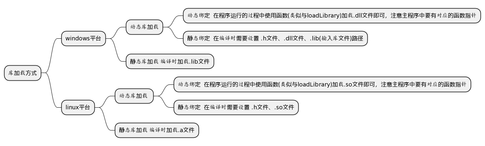

理解动态库和静态库的一些基本知识点和机制,了解动态库和静态库的制作、函数导出以及加载方式。
动态库和静态库的区别
动态库和静态库的本质区别在于,链接阶段如何被处理。链接是将各种代码和数据部分收集起来并组合成为一个单一文件的过程,说的通俗一点,链接就是把编译生成的*.o目标文件整合成可执行文件的过程。
静态库文件(.a或者.lib)实际上是任意个目标文件的集合。在链接阶段,会将汇编生成的目标文件.o与引用的库一起链接到可执行文件中。
动态库并不在链接时将需要的二进制代码"拷贝"到可执行文件中,而是仅仅"拷贝"一些重定位和符号表信息,有这些信息使得程序运行时完成真正的链接过程。
| 区别项 | 动态库 | 静态库 |
| 运行时对内存的影响 | 开启n个进程需要加载一次动态库,节省内存空间 | 开启n个进程则需要消耗n个静态库的内存空间 |
| 链接时机 | 运行时链接 | 编译时链接 |
| 更新影响 | 更新动态库后直接替换原文件即可 | 更新静态库后需要重新编译可执行文件 |
| 移植便利性 | 容易遗漏动态库或出现库版本不对应的情况 | 方便移植 |
windwos和linux的库加载方式

为什么windows有额外的lib文件
Windows下用VS创建DLL项目生成.dll文件时,一般会伴随生成一个.lib文件；使用这个.dll文件时,需要将伴随的.lib加进链接选项。事实上,这里的.lib文件中只包含简单的导出定义,实际的代码还是在.dll文件中。这里的.lib文件并非是上面提到的静态库,而是动态链接库的导入库(Import Libary)。
虽然共用扩展名,但它们的内容是完全不一样的。导入库只在链接的时候需要,程序运行的时候只需要.dll文件即可。此外,DLL项目中必须至少导出一个函数、变量或者类才会有.lib文件生成, 没有导出的话就不生成.lib文件。由于一般情况下DLL项目都是为了导出符号给别的项目用,所以才给人一种动态库总伴随着一个"静态库"文件的假象。
那为什么在Linux下用GCC生成和使用.so文件在静态绑定时不需要类似.lib这样的文件呢?直接原因是Windows下的链接器只能处理.lib这样的非可执行文件,不能处理.dll这样的可执行文件,所以用一个导入库(.lib)来辅助链接;而在Linux下,.so文件是elf格式的,这种格式既可执行又能链接,所以GCC就没必要使用额外的文件来辅助链接共享库了。
导出函数
这个概念只与动态库有关系,外部程序想要使用动态库中的实现,那么动态库必须提供对外的接口供他人使用,这个接口就是导出函数。
在linux下默认导出所有的全局符号(全局函数和全局变量)。但是在Windows下,默认所有符号都不导出。不过像linux默认全都导出是不好的,第一是生成的动态库会变大,第二是程序启动时加载动态库会耗时,应该是提供什么功能就导出对应的符号。所以需要我们告诉编译器要导出的符号,这就是导出(export)过程,当我们使用DLL导出符号时,这个过程为导入(import)。
符号是导出还是导入需要使用关键字修饰,不同平台使用的关键字不同,下面会讲到。
linux下符号的导出与导入
gcc编译时需要加上 -fvisibility=hidden ,使得所有符号默认不导出。
linux下符号属性关键字使用__attribute__,导出导入都是__attribute__((visibility("default"))),__attribute__((visibility("hidden")))修饰符号则表示当前函数默认隐藏不导出。
//mydll.cpp mydll.h 编译生存动态库
//main.cpp使用动态库
//================================mydll.h
#ifndef __MYDLL_H__
#define __MYDLL_H__
#include <iostream>
#include <stdio.h>
#ifdef __cplusplus
extern "C" {
#endif
__attribute__((visibility("default"))) void call_one(); //导出函数声明
__attribute__((visibility("default"))) void call_two();
#ifdef __cplusplus
}
#endif
#endif
//================================mydll.cpp
#include "mydll.h"
#ifdef __cplusplus
extern "C" {
#endif
__attribute__((visibility("default"))) void call_one(){ //导出函数定义
printf("这是导出函数 call_one\n");
}
__attribute__((visibility("default"))) void call_two(){
printf("这是导出函数 call_two\n");
}
#ifdef __cplusplus
}
#endif
//================================main.cpp
#include "mydll.h"
#include <dlfcn.h>
typedef void (*dll_call_one)();
typedef void (*dll_call_two)();
int main(){
//动态加载库文件
void * pmydll = dlopen("./libmydll.so",RTLD_NOW);
//解析导出符号
dll_call_one fun1 = (dll_call_one)dlsym(pmydll, "call_one");
dll_call_two fun2 = (dll_call_two)dlsym(pmydll, "call_two");
//使用导出函数
fun2();
fun1();
//卸载导出函数
dlclose((void *)pmydll);
return 0;
}
/*编译命令
g++ mydll.cpp -fPIC -shared -o libmydll.so 编译生成动态库
g++ main.cpp -ldl -L "./" -lmydll 编译生成可执行文件
*/
/*执行结果
这是导出函数 call_one
这是导出函数 call_two
*/
windows下符号的导出与导入
微软下的MSVC编译器提供了 __declspec 属性关键字来修饰某个函数或者变量。使用 __declspec(dllexport) 表示该符号是从本DLL导出的符号, __declspec(dllimport) 表示该符号是从别的DLL导入的符号,使用方法和上面的代码差不多,只不过需要替换一下修饰关键字。
跨平台的使用导出函数
实际代码中动态库也是要考虑跨平台的问题,下面代码只是通用于 windows 和 linux 系统来说,下面是展示Qt里跨平台的写法。
/* 第一段代码
这里是定义是导出函数还是导入函数,这里需要说明UNTITLED_LIBRARY是Qt pro文件中define的一个变量,
就是第二段代码中定义的如果定义了UNTITLED_LIBRARY则视为导出,没有定义则视为导入(显示的使用导入可以提高点效率)
*/
#if defined(UNTITLED_LIBRARY)
# define UNTITLED_EXPORT Q_DECL_EXPORT
#else
# define UNTITLED_EXPORT Q_DECL_IMPORT
#endif
//第二段代码 pro文件中定义的
DEFINES += UNTITLED_LIBRARY
//第三段代码 下面代码是Q_DECL_EXPORT的定义,实际使用Q_DECL_EXPORT修改符号,方便且统一
# ifdef Q_OS_WIN
# define Q_DECL_EXPORT __declspec(dllexport)
# define Q_DECL_IMPORT __declspec(dllimport)
# elif defined(QT_VISIBILITY_AVAILABLE)
# define Q_DECL_EXPORT __attribute__((visibility("default")))
# define Q_DECL_IMPORT __attribute__((visibility("default")))
# define Q_DECL_HIDDEN __attribute__((visibility("hidden")))
# endif
导出class
只需要在导出类加上修饰关键字,就可以实现导出类。不足的地方是:使用者需要知道整个类的实现,包括基类、类中成员对象,也就是说所有跟导出类相关的东西,使用者都要知道。这时候的dll导出的是跟类相关的函数:如构造函数、赋值操作符、析构函数、其它函数,这些都是使用者可能会用到的函数(不推荐)。
这种导出类的方式,除了导出的东西太多、使用者对类的实现依赖太多之外,还有其它问题 : 必须保证使用同一种编译器。导出类的本质是导出类里的函数,因为语法上直接导出了类,没有对函数的调用方式、重命名进行设置,导致了产生的dll并不通用。
还有一种导出方法,结构是这样的:导出类是一个派生类,派生自一个抽象类。使用者需要知道这个抽象类的结构。DLL最少只需要提供一个用于获取类对象指针的接口。使用者跟DLL提供者共用一个抽象类的头文件,使用者依赖于DLL的东西很少,只需要知道抽象类的接口,以及获取对象指针的导出函数,对象内存空间的申请是在DLL模块中做的,释放也在DLL模块中完成,最后记得要调用释放对象的函数
这种方式比较好,通用,产生的DLL没有特定环境限制。借助了C++类的虚函数。一般都是采用这种方式。除了对DLL导出类有好处外,采用接口跟实现分离,可以使得工程的结构更清晰,使用者只需要知道接口,而不需要知道实现。
//================================mydll_class_interface.h
//抽象类,动态库文件和main.cpp都需要include的
#ifndef __mydll_class_interface_h__
#define __mydll_class_interface_h__
#include <iostream>
#include <stdio.h>
class mydll_class_interface{
public:
virtual void call_one() = 0;
};
#ifdef __cplusplus
extern "C" {
#endif
//提供一个导出函数接口用来获取要导出类的对象指针
__attribute__((visibility("default"))) mydll_class_interface *GetObject();
#ifdef __cplusplus
}
#endif
#endif
//================================mydll_class.h
#ifndef __mydll_class_h__
#define __mydll_class_h__
#include "mydll_class_interface.h"
//mydll_class才是要导出的类
class mydll_class:public mydll_class_interface{
public:
mydll_class();
virtual void call_one();
};
#endif
//================================mydll_class.cpp
#include "mydll_class.h"
mydll_class::mydll_class(){
printf("mydll_class 构造函数\n");
}
void mydll_class::call_one(){
printf("mydll_class call_one函数,这是要向外界导出的函数\n");
}
#ifdef __cplusplus
extern "C" {
#endif
//实现要导出的接口,向使用者返回一个导出类的对象指针
__attribute__((visibility("default"))) mydll_class_interface *GetObject(){
return new mydll_class;
}
#ifdef __cplusplus
}
#endif
//================================main.cpp
#include "mydll.h"
#include <dlfcn.h>
#include "mydll_class_interface.h"
typedef mydll_class_interface * (*fun)();
int main(){
//动态加载库文件
void * pmydll = dlopen("./libmydll_class.so",RTLD_NOW);
//解析导出符号
fun fun1 = (fun)dlsym(pmydll, "GetObject");
//获取导出类的对象指针
mydll_class_interface * p = fun1();
//调用类对象接口
p->call_one();
//卸载
dlclose((void *)pmydll);
return 0;
}
/*
编译命令:
g++ mydll_class.cpp -fPIC -shared -o libmydll_class.so
g++ main.cpp -ldl -L "./" -lmydll_class
执行结果:
mydll_class 构造函数
mydll_class call_one函数,这是要向外界导出的函数
*/